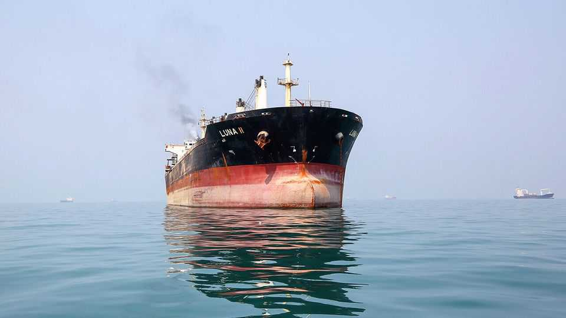

Is traffic through Hormuz really back to normal?
America would like the world to think so as oil prices top $100 again

Sep 10th 2026
Listen to donald trump and normality reigns in the world’s most contested waterway. America and Iran may be firing again, but “Hormuz Oil Volumes are BACK,” declared the president on September 3rd. He claims that 18m barrels a day (b/d) now pass through the strait—just shy of the pre-war average of 20m. J.D. Vance, his vice-president, says Iran’s control of Hormuz is “effectively gone”.

“A big lie,” counters Mohsen Rezaei, Iran’s top security official. He puts daily crossings at seven or eight ships, far below the 30-40 that Mr Trump’s camp claims. Ship-trackers are sceptical, too: Kpler, a data firm, has outflow below 5m b/d in the week to August 30th (see chart). Even the Joint Maritime Information Centre, linked to America’s navy, cannot square its count of nearly 30 daily passages with the single digits independent trackers typically report.
Neither side has much incentive to show its workings, notes Shahin Iraninejad of gssi, a sovereign-risk advisory firm. America wants voters to believe the millions of dollars it splashes daily on escorting tankers in the Gulf are paying off; Iran wants to appear in control of the strait, even as more oil slips through. But reality matters. The more Gulf exports are throttled, the deeper importers must dip into stocks or bid up oil elsewhere; Brent crude is back above $100 a barrel for the first time since July. So who is closer to the truth?
The truth is murky because most tankers now cross with transponders off, to avoid becoming targets. Some broadcast signals, but pervasive radio jamming blurs the picture. Others tamper with their radios to fake their location. Most transits happen at night, out of satellites’ view. Complicating matters, Gulf barrels often change hands before reaching the high seas: a few firms carry most of the traffic, shuttling oil through the strait before clandestinely transferring cargo outside it.
So tanker-counters infer transits retroactively, tracking loadings and discharges and watching for vessels that vanish from the Gulf only to resurface outside it, explains Pamela Munger of Vortexa, another ship-tracker. Passages are often confirmed with a lag, so initial numbers are best read as a floor, revised up as more transits surface. Kpler recently raised its estimate for the week to August 10th to 7.2m b/d, up from an initial calculation of 4.7m.
Assuming similar undercounting throughout August, Kpler’s eventual reading at the turn of the month may near the 9m b/d seven-day average that Chris Wright, America’s energy secretary, cited on September 6th. Part of the gap lies in definitions: what counts as oil (crude only or products too); where the counting line sits (the strait or the Gulf of Oman); and when a barrel is dated (at loading, at crossing or on reappearance). Commercial trackers like Kpler and Vortexa are clear about their methodology; officials are not, and probably favour generous definitions.
That still doesn’t explain Mr Trump’s 18m b/d. Perhaps he cherry-picked an exceptional day: since March, counting every possible oil product, Vortexa has recorded only two days above 16m. Or maybe he mixed in exports that now bypass the strait entirely. Since February Saudi Arabia has pushed more crude through its East-West pipeline, lifting exports from its Red Sea ports by 1m-3m b/d; the United Arab Emirates has rerouted around 1m b/d through a pipeline to Fujairah. Add a little more from Oman, over a favourable window, and bypass routes may amount to 5m b/d.
Either way, the figure is not helpful. Shipping flows are bumpy, so weekly averages say more than daily tallies. The latest tit-for-tat attacks on ships, plus Iranian threats against tankers shuttling crude through Hormuz, has curbed transits sharply in recent days, notes John Ollett of Argus Media, a price-reporting agency. On September 8th Kpler counted eight transits, down from 23 a week before. Attacks by Yemen’s Houthis on ships and Saudi targets have slowed Red Sea shipments.
That points to a sober reality for Mr Trump: past Hormuz traffic does not predict future performance because progress can reverse quickly. No amount of American spin has brought insurance rates for crossing Hormuz below 10% of a ship’s value (they averaged 0.25% before the war). Even if mines have been cleared from parts of the strait, as Mr Trump claims, they can drift in from elsewhere, and Iran can lay new ones. Its forces can still strike tankers.
Oil markets are showing renewed signs of stress. North Sea Dated, a near-term crude benchmark, is over $113 a barrel, up from $70 in June. Diesel has burst through $200 a barrel in America (and $198 in Europe), nearly double its price in February. And on September 9th Mr Trump suggested that the conflict with Iran would not end until after the midterm elections. For now, the president can fight a data war all he likes. What matters is how many importers receive the barrels they ordered. ■